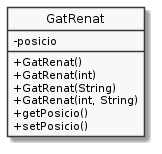

Exercici 04_16. Molts constructors¶
Exercici 04_16. Molts constructors¶
Context
Carpeta de lliurament:
04_16_molts_constructors/Continguts relacionats: Constructors
Com lliurar-lo: instruccions
[✓] Exercici amb autoavaluació
Enunciat
Posem en pràctica la possibilitat d’afegir més d’un constructor al nostre amic Renat. En concret, ens interessarà permetre crear instàncies de les següents maneres:

1 2 3 4 5 6 7 8 9 10 11 12 | public static void main(String[] args) {
GatRenat[] renats = {
new GatRenat(), // tot per defecte
new GatRenat(8), // 8 vides i posició per defecte
new GatRenat("dret"), // posició dret i vides per defecte
new GatRenat(8, "dret") // 8 vides i posició dret
};
for (GatRenat renat: renats) {
System.out.println(renat);
}
}
|
Executant el codi resultant ens trobarem:
$ java GatRenat
Vides: 7. Posició: estirat
Vides: 8. Posició: estirat
Vides: 7. Posició: dret
Vides: 8. Posició: dret
Vols fer-ho molt modulat?
Implementa-ho de manera que tots els constructors excepte un facin ús de
this(), i que el que no fa ús de this(), fa us dels setters.